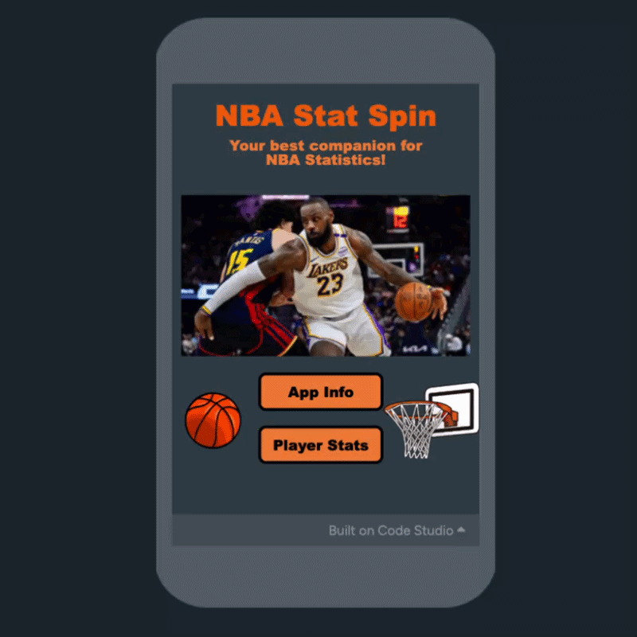

NBA Stat Spin - AP Computer Science Principles

The purpose of my NBA Stats Generator project was to build a code.org app that lets users quickly check NBA player statlines without having to look through box scores from every game of the season. Users can generate a random statline, search for a specific player, or save players to a favorites list. When I started the project I felt excited because I wanted to build something I thought was cool but wasn't sure how to work with a real sports dataset. A goal I set for myself was to finish all three features instead of abandoning the project halfway. I had to decide which NBA dataset to use and how to structure the app. To accomplish my goal, I chose to build the random statline generator first and then add other features from there. First, I picked an NBA dataset from a website called Kaggle. After that, I built the random statline generator to get the information from the dataset to the screen. Next, I added the player search. Finally, I built the favorites list.
Something I did well was researching ways in which I could improve my code. An area I need improvement in is documenting more of my program as I code. Next time, I will try to go more in depth with every feature. I am proud that I followed through and finished making the app. I am disappointed that I couldn't add more features I had in mind. I investigated the world by identifying an actual problem and researching how to solve it with real data. Specifically, I studied how NBA stats are structured across games and built a tool that makes them accessible to fans. I communicated ideas by selecting appropriate digital media to share information. Specifically, I built a code.org app where users can generate, search, and save player statlines utilizing the interface as a way to show off the data clearly.
Schoolwide Learner Outcomes addressed
- Investigate the World
- Communicate Ideas